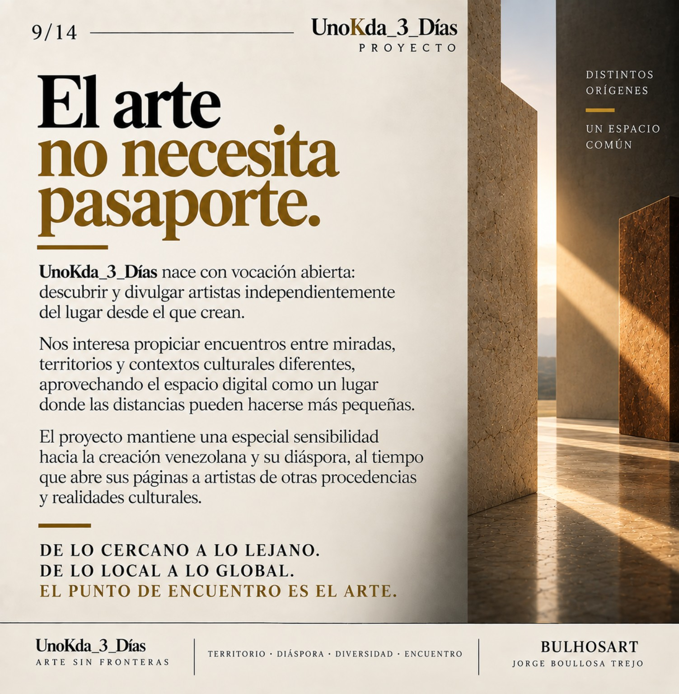

Projekt zur digitalen Kunstvermittlung
Zeitgenössische Kunst,
eine andere Art zu sehen.
Ein Kunstwerk kann den Blick innehalten lassen und ein Gespräch eröffnen.
UnoKda_3_Días verbindet Künstler und neue Publikumsgruppen durch Recherche, kuratorische Publikationen und Kulturvermittlung.

01 Das Werk bleibt unverändert
02 Eine individuelle Deutung für jeden Künstler
03 Eine Brücke zu neuem Publikum
01 / Das Projekt
Eine Ausgabe, konzipiert für jeden Künstler.
Kunst endet nicht beim Werk. Auch unser Blick, unsere Worte und die Zeit, die wir dem Betrachten widmen, zählen.
UnoKda_3_Días ist eine unabhängige Initiative für digitale Kunstvermittlung. Sie untersucht künstlerische Werdegänge, betrachtet Werke und erstellt kuratorische Publikationen mit einer eigenständigen redaktionellen Sprache.
Urheberschaft und Integrität des Kunstwerks bleiben gewahrt. Gestaltung, Recherche und kuratorische Texte bilden eine eigenständige redaktionelle Arbeit. Wir sind keine kommerzielle Künstlervertretung.
Kuratorische und redaktionelle Leitung: Jorge Boullosa Trejo · BULHOSART

Redaktionelles Archiv · Erste Ausgabe
Kunst braucht keinen Pass.
Die Identität von UnoKda_3_Días entstand aus Begegnungen zwischen Künstlern, Betrachtern, Orten und unterschiedlichen Sichtweisen.
Hier zeigen wir zwei Originaltafeln aus unserem Gründungsarchiv. Es handelt sich um redaktionelle Dokumente des Projekts, deren genehmigte Bilder unverändert bleiben.
Künstlerarchiv entdecken02 / Künstlerarchiv
Werke, Lebenswege und Prozesse.
Künstlerprofile enthalten ausschließlich Werke und Materialien, deren Veröffentlichung geprüft und genehmigt wurde.
Das Künstlerarchiv wird hier ergänzt, sobald die Werke und Materialien geprüft und freigegeben sind.
03 / Audiovisuelles Archiv
Der Blick in Bewegung.
Gespräche, kreative Prozesse, Präsentationen und audiovisuelle Arbeiten.
Die Videothek wird mit ausgewählten und freigegebenen Videos eröffnet. Noch sind keine Inhalte veröffentlicht.
04 / Kuratorische Editionen
Bibliothek und Zeitschriftenarchiv.
Künstlerbücher, Zeitschriften und Kataloge mit Blätterfunktion für Mobilgerät und Computer.
Bücher und Kataloge erscheinen hier, sobald ihre digitalen Ausgaben freigegeben sind.
05 / Kuratorisches Notizbuch
Kunst endet nicht beim Werk.
Eine Figur, die Spannung einer Linie oder Arbeitsspuren im Material können uns innehalten lassen. Wir wissen nicht immer, warum. Erneutes Betrachten bringt uns dem Schaffensprozess näher.
Dieser Raum versammelt Beobachtungen, Fragen und kuratorische Betrachtungen, die zum Sehen einladen, ohne eine einzige Deutung vorzugeben.
Jorge Boullosa Trejo · BULHOSART
06 / Künftige Ausgaben
Dein Werk kann eröffnen ein Gespräch.
Wir bereiten eine kostenlose Voranmeldung für Künstler vor, die sich für künftige Ausgaben interessieren. Hier findest du Ablauf und Unterlagen. Eine Bewerbung bedeutet weder einen reservierten Platz noch eine Zahlung.
Informationen zur kostenlosen Voranmeldung